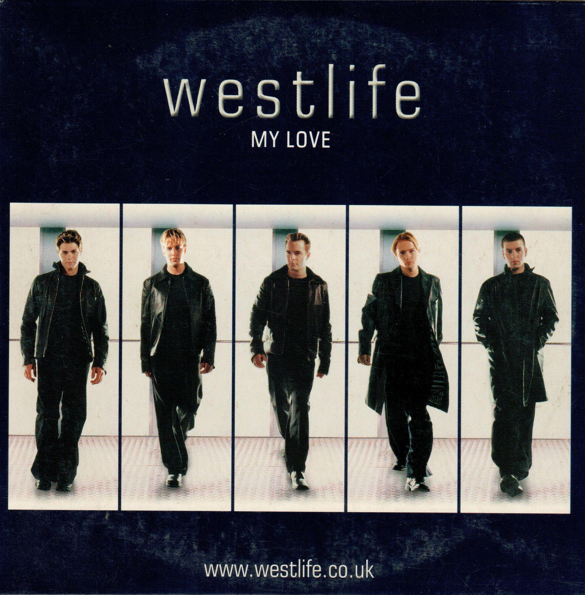

ARTIST: Westlife
SONG TITLE: My Love
♪ Song Lyrics ♪
An empty street, an empty house
A hole inside my heart
I'm all alone, the rooms are getting smaller
I wonder how, I wonder why
I wonder where they are
The days we had, the songs we sang together, oh, yeah
And oh my love, I'm holding on forever
Reaching for the love that seems so far
So, I say a little prayer
And hope my dreams will take me there
Where the skies are blue
To see you once again, my love
Overseas, from coast to coast
To find a place I love the most
Where the fields are green
To see you once again, my love
About This Song
My Love is a romantic pop song by the Irish group
Westlife. Released in 2000, it became one of their
most memorable hits, expressing love, memories,
and the longing to see someone special again.